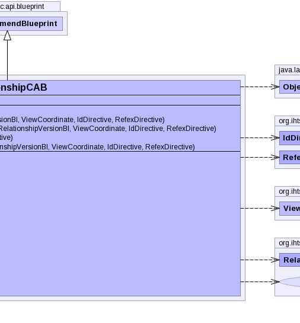

public class RelationshipCAB extends CreateOrAmendBlueprint
RelationshipChronicleBI. This is the preferred method for
updating or creating new descriptions.TerminologyBuilderBI,
RelationshipChronicleBI|  |
| Modifier and Type | Field and Description |
|---|---|
static UUID |
relSpecNamespace |
idDirective, pcs, properties, referencedComponent, refexDirective| Constructor and Description |
|---|
RelationshipCAB(int sourceNid,
int typeNid,
int targetNid,
int group,
RelationshipType relationshipType,
IdDirective idDirective)
Instantiates a new relationship blueprint using nids values.
|
RelationshipCAB(int sourceNid,
int typeNid,
int targetNid,
int group,
RelationshipType relationshipType,
RelationshipVersionBI relationshipVersion,
ViewCoordinate viewCoordinate,
IdDirective idDirective,
RefexDirective refexDirective)
Instantiates a new relationship blueprint using nid values and a given
relationshipVersion. |
RelationshipCAB(UUID sourceUuid,
UUID typeUuid,
UUID targetUuid,
int group,
RelationshipType relationshipType,
IdDirective idDirective)
Instantiates a new relationship blueprint using uuids values.
|
RelationshipCAB(UUID sourceUuid,
UUID typeUuid,
UUID targetUuid,
int group,
RelationshipType relationshipType,
RelationshipVersionBI relationshipVersion,
ViewCoordinate viewCoordinate,
IdDirective idDirective,
RefexDirective refexDirective)
Instantiates a new relationship blueprint using uuid values and a given
relationshipVersion. |
RelationshipCAB(UUID sourceUuid,
UUID typeUuid,
UUID targetUuid,
int group,
UUID componentUuid,
RelationshipType relationshipType,
RelationshipVersionBI relationshipVersion,
ViewCoordinate viewCoordinate,
IdDirective idDirective,
RefexDirective refexDirective)
Instantiates a new relationship blueprint using uuid values and a given
relationshipVersion. |
| Modifier and Type | Method and Description |
|---|---|
boolean |
equals(Object o)
Checks if this relationship blueprint is equal to the given object.
|
int |
getCharacteristicNid()
Gets the nid of the relationship characteristic.
|
UUID |
getCharacteristicUuid()
Gets the uuid of the relationship characteristic.
|
int |
getGroup()
Gets the int representing the grouping for this relationship blueprint.
|
int |
getRefinabilityNid()
Gets the nid of the relationship refinability.
|
UUID |
getRefinabilityUuid()
Gets the uuid of the relationship refinability.
|
int |
getSourceNid()
Gets the nid of the source concept.
|
UUID |
getSourceUuid()
Gets the uuid of the source concept.
|
int |
getTargetNid()
Gets the nid of the target concept.
|
UUID |
getTargetUuid()
Gets the uuid of the target concept.
|
int |
getTypeNid()
Gets the nid of the relationship type.
|
UUID |
getTypeUuid()
Gets the uuid of the relationship type.
|
void |
recomputeUuid()
Computes the uuid for this relationship based on the source concept uuid,
relationship type uuid, and target concept uuid.
|
protected void |
setSourceUuid(UUID sourceNewUuid)
Sets the uuid of the source concept.
|
boolean |
validate(RelationshipVersionBI relationshipVersion)
Validates this relationship blueprint's fields against the given
relationhipVersion. |
addAnnotationBlueprint, addExtraUuid, addLongId, addPropertyChangeListener, addPropertyChangeListener, addStringId, getAnnotationBlueprints, getComponentNid, getComponentUuid, getComponentUUID, getIdMap, getInt, getPrimoridalUuidString, getPrimoridalUuidString, getProperties, getReferencedComponent, getStatus, getUuid, propertyChange, removePropertyChangeListener, removePropertyChangeListener, replaceAnnotationBlueprints, setComponentUuid, setComponentUuidNoRecompute, setCurrent, setReferencedComponent, setRetired, setStatuspublic static final UUID relSpecNamespace
public RelationshipCAB(int sourceNid,
int typeNid,
int targetNid,
int group,
RelationshipType relationshipType,
IdDirective idDirective)
throws IOException,
InvalidCAB,
ContradictionException
sourceNid - the nid of the source concepttypeNid - the nid of the relationship typetargetNid - the nid of the target conceptgroup - the int representing the relationship group, set to 0 if
relationship is not groupedrelationshipType - the tk relationship type specifying the
relationship characteristic type. This value is used to determine the
relationship refinability type.IOException - signals that an I/O exception has occurredInvalidCAB - if the any of the values in blueprint to make are
invalidContradictionException - if more than one version is found for a
view coordinatepublic RelationshipCAB(UUID sourceUuid, UUID typeUuid, UUID targetUuid, int group, RelationshipType relationshipType, IdDirective idDirective) throws IOException, InvalidCAB, ContradictionException
sourceUuid - the uuid of the source concepttypeUuid - the uuid of the relationship typetargetUuid - the uuid of the target conceptgroup - the int representing the relationship group, set to 0 if
relationship is not groupedrelationshipType - the tk relationship type specifying the
relationship characteristic type. This value is used to determine the
relationship refinability type.IOException - signals that an I/O exception has occurredInvalidCAB - if the any of the values in blueprint to make are
invalidContradictionException - if more than one version is found for a
view coordinatepublic RelationshipCAB(int sourceNid,
int typeNid,
int targetNid,
int group,
RelationshipType relationshipType,
RelationshipVersionBI relationshipVersion,
ViewCoordinate viewCoordinate,
IdDirective idDirective,
RefexDirective refexDirective)
throws IOException,
InvalidCAB,
ContradictionException
relationshipVersion.sourceNid - the nid of the source concepttypeNid - the nid of the relationship typetargetNid - the nid of the target conceptgroup - the int representing the relationship group, set to 0 if
relationship is not groupedrelationshipType - the tk relationship type specifying the
relationship characteristic type. This value is used to determine the
relationship refinability type.relationshipVersion - the relationship version to use as a patternviewCoordinate - the view coordinate specifying which versions are
active and inactiveidDirective - refexDirective - IOException - signals that an I/O exception has occurredInvalidCAB - if the any of the values in blueprint to make are
invalidContradictionException - if more than one version is found for a
view coordinatepublic RelationshipCAB(UUID sourceUuid, UUID typeUuid, UUID targetUuid, int group, RelationshipType relationshipType, RelationshipVersionBI relationshipVersion, ViewCoordinate viewCoordinate, IdDirective idDirective, RefexDirective refexDirective) throws IOException, InvalidCAB, ContradictionException
relationshipVersion.sourceUuid - the uuid of the source concepttypeUuid - the uuid of the relationship typetargetUuid - the uuid of the target conceptgroup - the int representing the relationship group, set to 0 if
relationship is not groupedrelationshipType - the tk relationship type specifying the
relationship characteristic type. This value is used to determine the
relationship refinability type.relationshipVersion - the relationship version to use as a patternviewCoordinate - the view coordinate specifying which versions are
active and inactiveidDirective - refexDirective - IOException - signals that an I/O exception has occurredInvalidCAB - if the any of the values in blueprint to make are
invalidContradictionException - if more than one version is found for a
view coordinatepublic RelationshipCAB(UUID sourceUuid, UUID typeUuid, UUID targetUuid, int group, UUID componentUuid, RelationshipType relationshipType, RelationshipVersionBI relationshipVersion, ViewCoordinate viewCoordinate, IdDirective idDirective, RefexDirective refexDirective) throws IOException, InvalidCAB, ContradictionException
relationshipVersion. Can specify the uuid to be associated
with the new relationship.sourceUuid - the uuid of the source concepttypeUuid - the uuid of the relationship typetargetUuid - the uuid of the target conceptgroup - the int representing the relationship group, set to 0 if
relationship is not groupedcomponentUuid - the uuid representing the new relationshiprelationshipType - the tk relationship type specifying the
relationship characteristic type. This value is used to determine the
relationship refinability type.relationshipVersion - the relationship version to use as a patternviewCoordinate - the view coordinate specifying which versions are
active and inactiveidDirective - refexDirective - IOException - signals that an I/O exception has occurredInvalidCAB - if the any of the values in blueprint to make are
invalidContradictionException - if more than one version is found for a
view coordinatepublic void recomputeUuid()
throws NoSuchAlgorithmException,
UnsupportedEncodingException,
IOException,
InvalidCAB,
ContradictionException
recomputeUuid in class CreateOrAmendBlueprintNoSuchAlgorithmException - indicates a no such algorithm exception
has occurredUnsupportedEncodingException - indicates an unsupported encoding
exception has occurredIOException - signals that an I/O exception has occurredInvalidCAB - if the any of the values in blueprint to make are
invalidContradictionException - if more than one version is found for a
give position or view coordinatepublic boolean equals(Object o)
public UUID getCharacteristicUuid()
public UUID getTargetUuid()
public int getGroup()
public UUID getRefinabilityUuid()
public UUID getSourceUuid()
public UUID getTypeUuid()
public int getCharacteristicNid()
throws IOException
IOException - signals that an I/O exception has occurredpublic int getTargetNid()
throws IOException
IOException - signals that an I/O exception has occurredpublic int getRefinabilityNid()
throws IOException
IOException - signals that an I/O exception has occurredpublic int getSourceNid()
throws IOException
IOException - signals that an I/O exception has occurredpublic int getTypeNid()
throws IOException
IOException - signals that an I/O exception has occurredprotected void setSourceUuid(UUID sourceNewUuid)
sourceNewUuid - the uuid of the source conceptpublic boolean validate(RelationshipVersionBI relationshipVersion) throws IOException
relationhipVersion. Compares the status nid, relationship
nid, source concept nid, relationship type nid, relationship refinability
nid, relationship characteristic nid, and relationship target nid.relationshipVersion - the relationship version to use for validationtrue, if this relationship blueprint's fields are
equal to the specified relationship versionIOException - signals that an I/O exception has occurredCopyright © 2013 International Health Terminology Standards Development Organisation. All rights reserved.